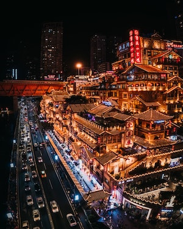

Chongqing is my hometown. it is one of the four municipalities under the direct administration of the central government of the People's Republic of China (the other three are Beijing, Shanghai, and Tianjin), and the only such municipality located deep inland. The municipality of Chongqing, roughly the size of Austria, includes the city of Chongqing as well as various discontiguous cities. Due to a classification technicality, Chongqing municipality can claim to be the largest city proper in the world—though it does not have the world's largest urban area. Source: Wikipedia.